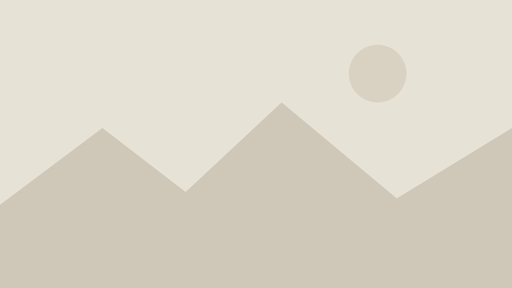

أتمتة الرافعات ومعدات الساحة
سلسلة الإمداد من الداخل
رحلة الحاوية في ميناء حديث
كيف تنتقل حاوية واحدة من السفينة إلى الطريق في أقل من يوم


لماذا الميناء
الميناء مفصل يربط البحر بالبر
- تمر عبر البحر نحو ٨٠٪ من حجم التجارة العالمية
- كل ساعة تأخير في الرصيف تتراكم على الطريق والمستودع
- الميناء الحديث يدير الوقت قبل أن يدير البضاعة
٠١
الفصل الأول
من السفينة إلى الرصيف
خمس محطات تمر بها كل حاوية
تشريح الرصيف
رصيف واحد وخمس محطات
anatomy: supply-port (static)سطر قصير يشرح الجزء
المشهد حيا
الرافعة تحدد إيقاع الرصيف كله
- الحاوية تنتظر الرافعة، والشاحنة تنتظر الحاوية
- المكدس المؤقت يمتص الفرق بين السرعتين
anatomy: supply-port (animated)
المسار
رحلة الحاوية في ست محطات
المسؤوليات
ست محطات وثلاث جهات مسؤولة
٠٢
الفصل الثاني
أين يضيع الوقت
الحاوية تقضي معظم وقتها واقفة
الدليل
الحاوية تنتظر أكثر مما تتحرك
البقاء في الساحة يأخذ أكثر من نصف الرحلة
الحلول
ثلاث روافع تختصر الانتظار
نظام مواعيد رقمي للشاحنات
نافذة واحدة للتخليص الجمركي
خط الأساس
إيقاع الرافعة اليوم
أتمتة الرافعات ومعدات الساحة
٢٢
حاوية في الساعة لكل رافعة
motion graphic
اكتب سطرا تمهيديا
اكتب عنوان التفصيل
جملة أو جملتان تشرحان العنصر.
بعد الأتمتة
الإيقاع نفسه بآلات أدق
٣٤
حاوية في الساعة لكل رافعة
اكتب عنوان التفصيل
جملة أو جملتان تشرحان العنصر.
خارطة الطريق
أربع مراحل حتى ميناء بلا ورق
الخلاصة
في الميناء الوقت هو البضاعة الحقيقية
كل دقيقة توفرها الرافعة تصل إلى رف المتجر